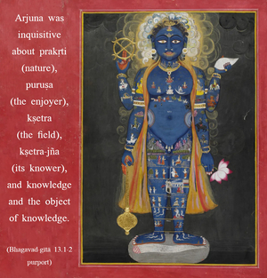

Arjuna said: O my dear Kṛṣṇa, I wish to know about prakṛti [nature], puruṣa [the enjoyer], and the field and the knower of the field, and of knowledge and the object of knowledge. The Supreme Personality of Godhead said: This body, O son of Kuntī, is called the field, and one who knows this body is called the knower of the field.

Arjuna was inquisitive about prakṛti (nature), puruṣa (the enjoyer), kṣetra (the field), kṣetra-jña (its knower), and knowledge and the object of knowledge. When he inquired about all these, Kṛṣṇa said that this body is called the field and that one who knows this body is called the knower of the field. This body is the field of activity for the conditioned soul. The conditioned soul is entrapped in material existence, and he attempts to lord it over material nature. And so, according to his capacity to dominate material nature, he gets a field of activity. That field of activity is the body. And what is the body? The body is made of senses. The conditioned soul wants to enjoy sense gratification, and, according to his capacity to enjoy sense gratification, he is offered a body, or field of activity. Therefore the body is called kṣetra, or the field of activity for the conditioned soul. Now, the person, who should not identify himself with the body, is called kṣetra-jña, the knower of the field. It is not very difficult to understand the difference between the field and its knower, the body and the knower of the body. Any person can consider that from childhood to old age he undergoes so many changes of body and yet is still one person, remaining. Thus there is a difference between the knower of the field of activities and the actual field of activities. A living conditioned soul can thus understand that he is different from the body. It is described in the beginning – dehino ’smin – that the living entity is within the body and that the body is changing from childhood to boyhood and from boyhood to youth and from youth to old age, and the person who owns the body knows that the body is changing. The owner is distinctly kṣetra-jña. Sometimes we think, “I am happy,” “I am a man,” “I am a woman,” “I am a dog,” “I am a cat.” These are the bodily designations of the knower. But the knower is different from the body. Although we may use many articles – our clothes, etc. – we know that we are different from the things used. Similarly, we also understand by a little contemplation that we are different from the body. I or you or anyone else who owns the body is called kṣetra-jña, the knower of the field of activities, and the body is called kṣetra, the field of activities itself.
In the first six chapters of Bhagavad-gītā the knower of the body (the living entity) and the position by which he can understand the Supreme Lord are described. In the middle six chapters of the Bhagavad-gītā the Supreme Personality of Godhead and the relationship between the individual soul and the Supersoul in regard to devotional service are described. The superior position of the Supreme Personality of Godhead and the subordinate position of the individual soul are definitely defined in these chapters. The living entities are subordinate under all circumstances, but in their forgetfulness they are suffering. When enlightened by pious activities, they approach the Supreme Lord in different capacities – as the distressed, those in want of money, the inquisitive, and those in search of knowledge. That is also described. Now, starting with the Thirteenth Chapter, how the living entity comes into contact with material nature and how he is delivered by the Supreme Lord through the different methods of fruitive activities, cultivation of knowledge, and the discharge of devotional service are explained. Although the living entity is completely different from the material body, he somehow becomes related. This also is explained.